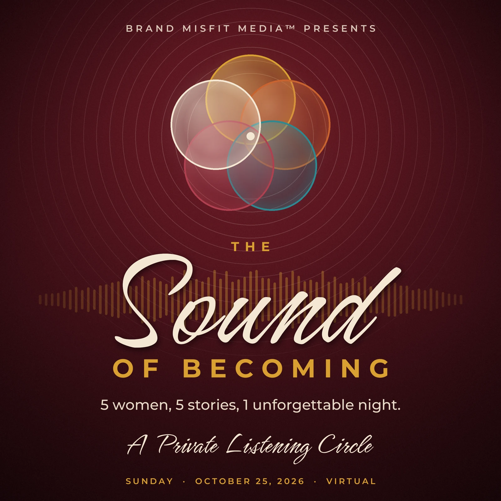
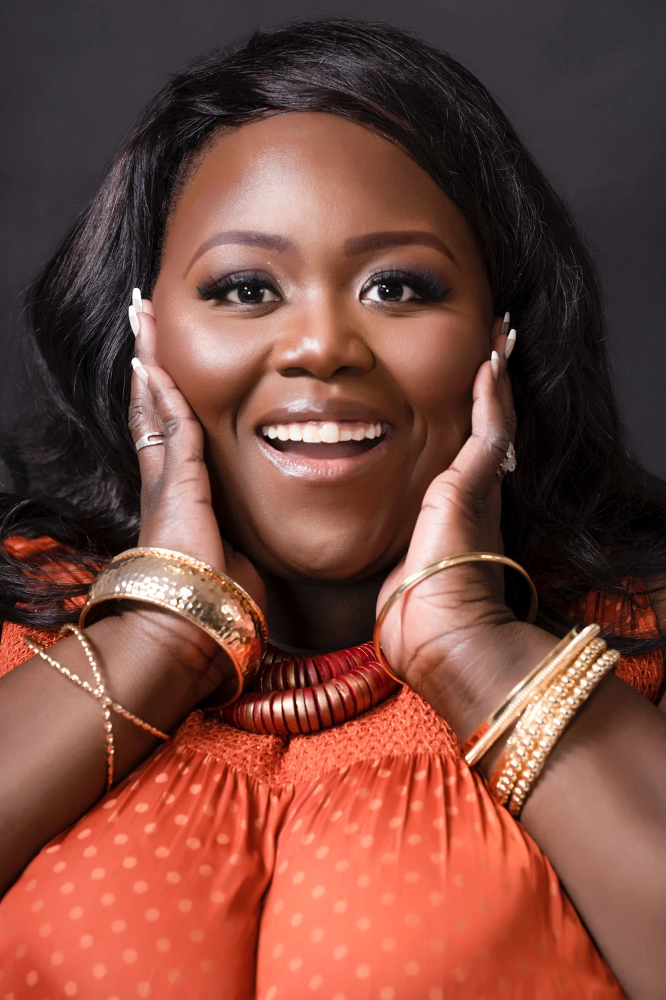

OCTOBER 25, 2026 · 4 PM EASTERN · VIRTUAL
Behind the music.
Inside the story.
Five women turned their words, their journeys, and their becoming into music. This is your invitation to listen a little closer.
Women. Stories. Albums.
One unforgettable circle.

MEET THE WOMEN / 01—05
Five women.
Entire worlds.
Meet the songwriters. Discover the purpose behind each album, hear what was shared in the circle, and find your way to more.


THE EVENING
The evening
unfolds.
Five stories. A shared vision.
A LITTLE SERENDIPITY
Let the circle surprise you.
Five albums. Start somewhere unexpected.

OUR EVENT PRODUCER
Sanah
Bittaye Mitchell
The person helping the evening flow. Meet Sanah, discover her work, and find a way to create something together.
Meet our producer ↗TAKE THE EVENING WITH YOU
The circle stays
with you.
The stories, the music, and the people behind them. Keep the program and return to the women whenever you need a little becoming of your own.
Keep the program and keepsake. Album listening links live on each woman’s page.